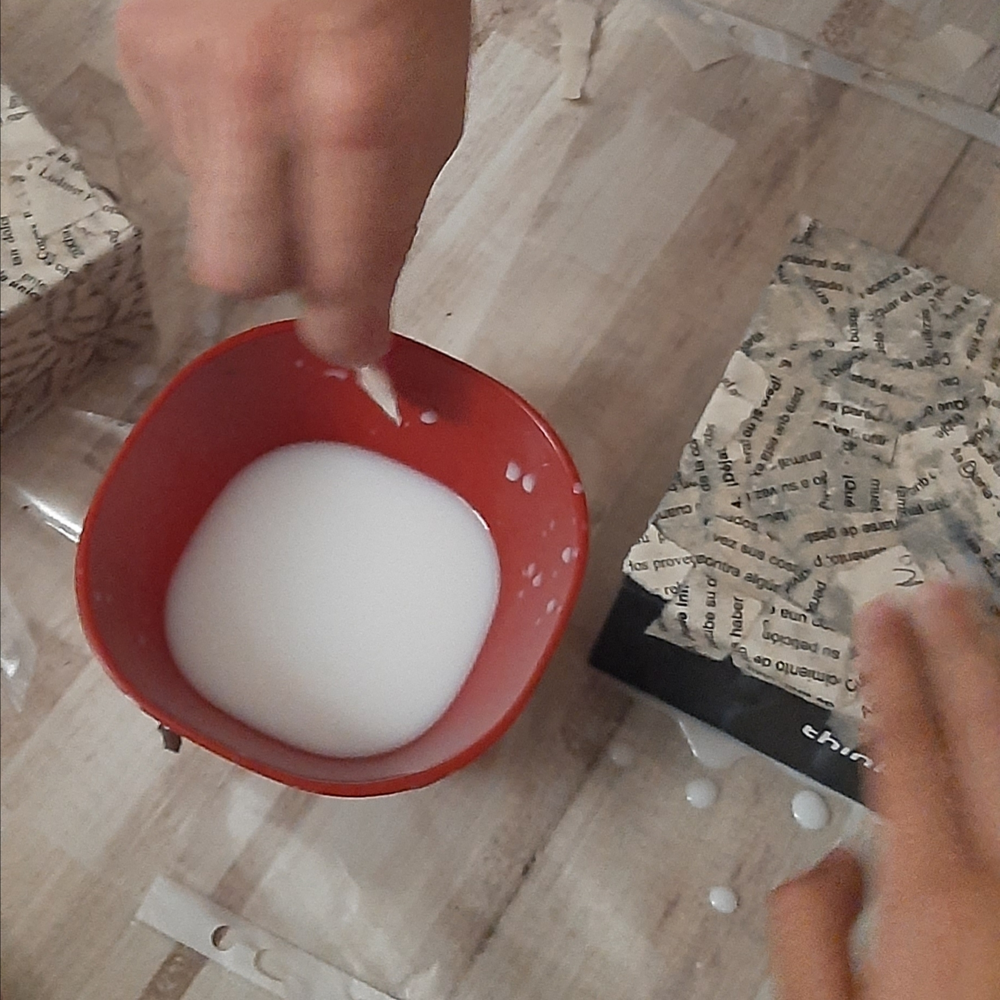

•head
•body
•div
•br
•a href=
•img src=
•class=
•{}
•color:
•font-family:
•font-size
•text-align:
•background-color:
•margin-left:
•margin-right
•widht:
•height:
•border-radius:
•position:
•top:
•left:
•animation-name:
•animation-duration:
•animation-iteration-count:
•@keyframes 10% 25% 50% 75% 100%
"Ardor, pinchazón, frío, cada capa tiene un ardor diferente, presión, necesidad de abrir, se hace presente"
[1:38 PM, 2/28/2026] Christian Santana: Well first they clot to make sure that there isn't an open wound to avoid infections or bleeding out
[1:38 PM, 2/28/2026] Christian Santana: Then underneath it cells perform mitosis until the wound heals

"Proceso, proceso de pegante, proceso de risa, proceso de llanto, proceso, proceso de compañía, proceso de pérdida, proceso de desorietación, proceso de papel, proceso de bisturí, proceso de grabación, proceso de microscopio, proceso de My Chemical Romance, proceso de organizar, proceso de procrastinar, proceso de colapso, proceso de lista, proceso de comer beber y cagar, proceso de rinitis, proceso de no entender, proceso de colapso X2, proceso de duda, proceso de disfrute, proceso de más My Chemical Romance, proceso de olvidar, proceso de no guardado, proceso de improvisar, proceso de silicona hirviendo, proceso de procesar el proceso, proceso de negación y aceptación brbrbr